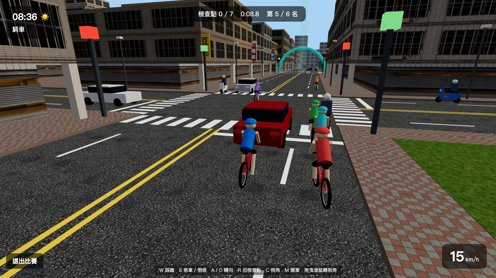
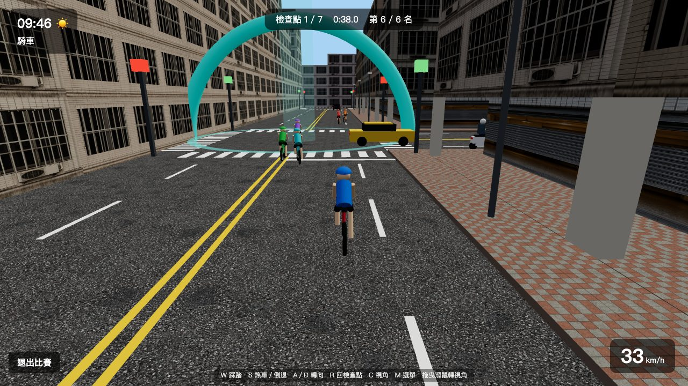
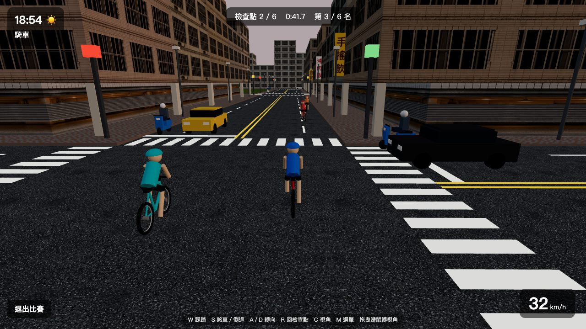
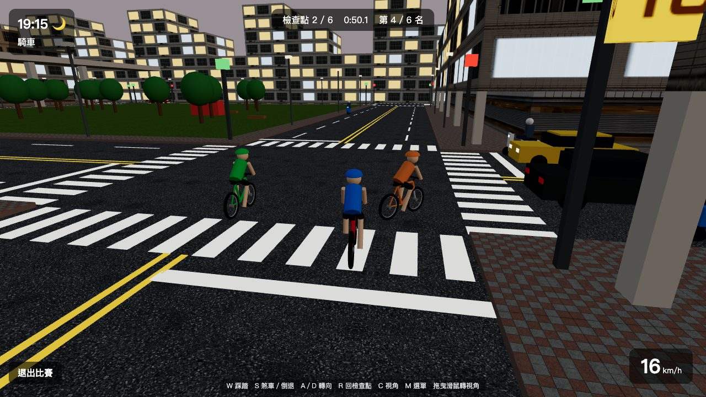
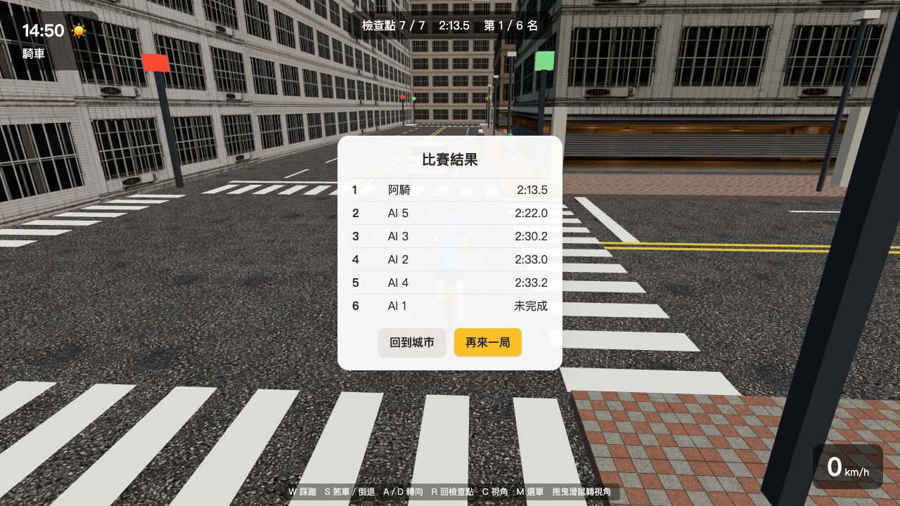
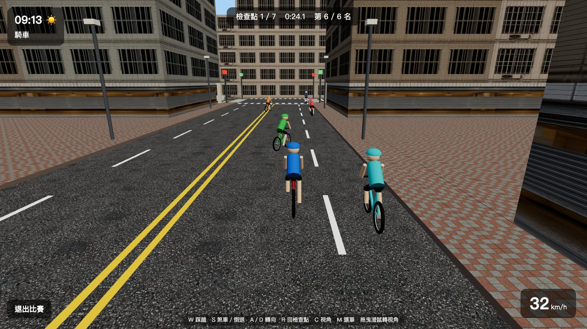
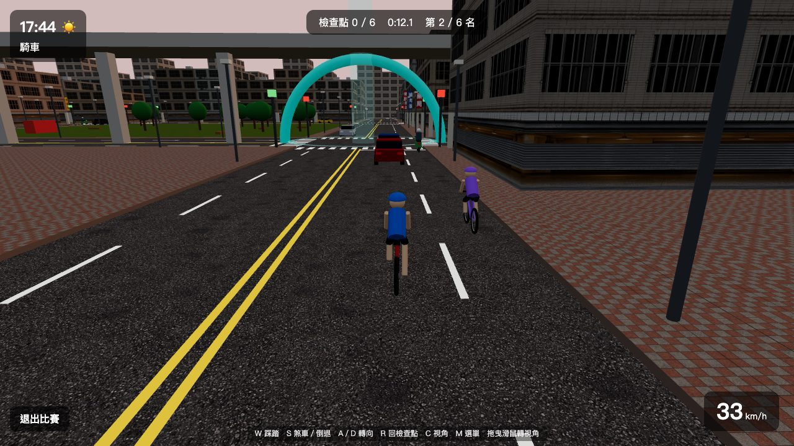
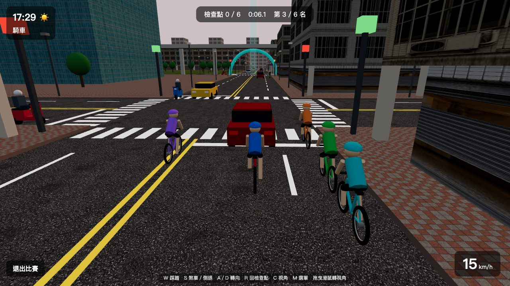

為什麼好玩
不是賽道，是真的街道。每一局路線都不一樣，每一個路口都可能翻盤。

六台車同場，肩並肩搶道
最多 6 位選手同場比賽，選手之間會互撞。起跑後大家擠在同一條路上，誰先搶到內線過彎、誰被擠到車陣後面，幾秒內就見分曉。

每局一條新路線
賽道每局隨機產生：12–16 段街道、6–8 座檢查點拱門，最後一座就是終點。拱門要照順序通過，沒有捷徑可抄，只能靠路線判斷和過彎技術。

城市不會為你停下
汽車、機車照著紅綠燈在路上跑，紅燈會停、綠燈會衝。要繞過塞在路口的車陣，還是貼著路邊鑽過去？撞上去會被反彈，速度一下子就掉光。

從清晨騎到深夜
城裡有日夜循環，遊戲裡的一天只要現實 10 分鐘。白天陽光下的街景、黃昏的橘色天空、夜晚亮起的窗戶和車燈，每一局的氣氛都不一樣。

差幾秒就是不同名次
AI 對手各有快慢，最快的那台會一路咬著你。我們試玩了 6 局，只贏過一次（領先第二名 8.5 秒），其餘從第 2 名到第 6 名都拿過。一局約 2–3 分鐘，輸了按「再來一局」馬上換條新路線重來。
怎麼玩
打開網頁、輸入名字，30 秒內就能站上起跑線。
進城
輸入名字，按「單人開始」；想找朋友就「建立房間」，把房號傳給對方「加入」。
開賽
左下角「腳踏車競速」面板選 AI 數量（0–5 台），按「開始比賽」。
衝刺
倒數 3、2、1 後開騎。跟著青綠色光柱和拱門，依序通過每個檢查點。
結算
通過最後一座拱門就是完賽。看成績表，不服氣就再來一局。
比賽操作
老手才知道的訣竅
極速大家都一樣，差距都在路口拉開。
彎前先放 W
全速衝進路口一定轉不過去。看到光柱轉向時先鬆油門，轉過去再踩滿。
靠右騎機車道
汽車走內側車道，靠右的機車道比較順。前面有機車擋住時，再切到路中間超車。
卡住就按 R
撞進車陣或卡在柱子邊，與其倒退半天，不如按 R 回到上一個檢查點重新出發。
開俯瞰看全局
按 C 切到俯瞰視角，路口的車流和下一個彎道一目了然，看完再切回來衝刺。
城市本身也能逛
比賽之外，這是一座完整的小城：走路、開車、敲門拜訪住戶，跟朋友在同一座城裡閒晃。



即將推出：整備站
每局用同樣的 1000 元預算組車：車架、輪組、傳動、把手任你搭配。直線多就上公路細胎，彎多就換抓地寬胎。連線 PK 依然公平，比的是誰更會看路線配車。